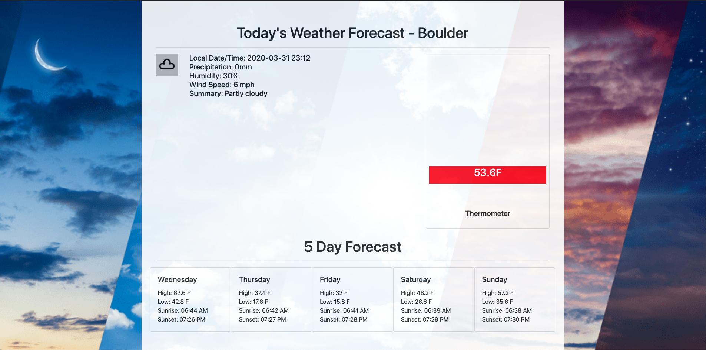
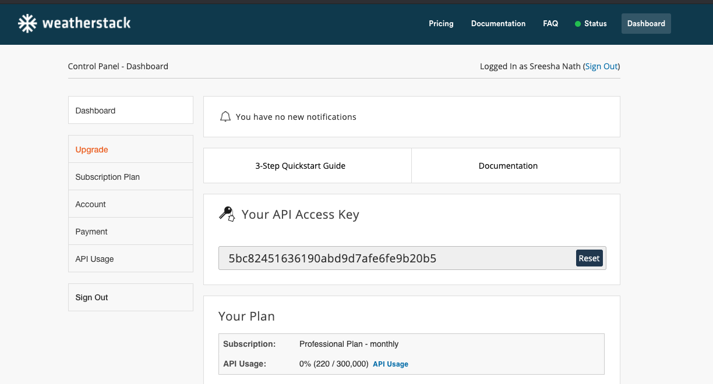

Lab 9 Web Services
In this lab, we will use a REST API to create webpage to display today's weather. You will edit the template (below) which includes all of the files necessary to work with REST. To receive credit for this lab, you MUST complete steps 1 and 3 in recitation and get marked off by your TA. You must upload "lab_9_link.txt" to Canvas by the deadline.
This lab is due right before recitation next week. For Example, If your lab is on this Friday at 10 AM, the submission deadline will be next Friday at 10 AM. There is no late policy for labs.
Download the template and make sure you extract the files before using them.
| Est. Time ⏱ |
|---|
| 0 minutes |
Lab Overview
For today's lab, you will be completing the starter weather.html web page so that it can access the weatherstack API and display today's weather and the 5 day future forecast. All of the necessary html code has been provided for you. All you have to do is complete the javascript at the bottom of weather.html. You can see an example of a completed weather.html web page below.

1. Set up a weatherstack Account - use the ACCESS_KEY provided here
(10 Minutes)
In order to access weatherstack's weather inforamtion, you'll need to create an account. Note, the free account only allows you to make 1,000 API calls per month. While that would be sufficient for today's lab, there is a limitation - you wouldn't be able to receive forecast/historical data with a free account. Hence, a premium account has been created for the class and everyone will be sharing that access_key (YOU ARE NOT REQUIRED TO PAY FOR A PREMIUM SUBSCRIPTION). Please use the API calls judiciously.
The ACCESS_KEY you will be using for this lab: 5bc82451636190abd9d7afe6fe9b20b5

2. Make API Requests
(20 Minutes)
In this section, we'll cover how your javascript code will make a request to the weatherstack API
- 1. Make a weatherstack API Request with Ajax and Jquery
-
$(document).ready(function() { var url =''; //Place your weatherstack API Call Here $.ajax({url:url, dataType:"jsonp"}).then(function(data) { }) })- var url = ''
- Inside of the single quotes '', you'll need to create the API URL to access data from weatherstack. The format of the URL would look like https://api.weatherstack.com/forecast?access_key={key}&query={latitude},{longitude}&forecast_days={number_of_days}
Make sure to replace the query parameter placeholders (e.g. {key}) with real values. Be sure to not include the '{' '}' - $.ajax({...
- To access weatherstack's data, we'll use ajax to make a call to our url for json information. The key part here is that our call will return a json object called data. The data object will include the current weather and future weather information listed by the hour or day. Checkout a sample response here in the API response section.
- 2. Display Your Weather Data
-
$(document).ready(function() { var url =''; //Place your weatherstack API Call Here $.ajax({url:url, dataType:"jsonp"}).then(function(data) { console.log(data);//Review all of the data returned console.log("Current Temp: " + data.current.temperature);//View Today's Temp }) })- console.log(data);
- To review all of the data provided by weatherstack, we'll print it out to the console. Open your Web Browser and you can see all of the fields loaded into our JSON data. The main fields we will be concerned with our are currently (the current weather) and forecast (a 5 day forecast of weather information).
- data.current.temperature
- To access the current weather information, we'll need to use the following format: data.current.FIELD_NAME. In this example, we are retrieving the current temperature.
- data.forecast['2020-04-04'].maxtemp
- To access the future weather information we'll need to access the forecast field's data. This field contains 5 days of information (starting with today's information). In the example, we are grabbing the estimated high temperature for April 4th which means you will need to use the date whose data you are looking for. Use the getKey() function to generate the key for each day when creating cards for forecasting weather.
- Complete List of Data Point Fields
- weatherstack provides far more information than what we'll need for today's lab. To see all of the types of information you can retrieve, checkout the documentation's complete list of data point fields here
- 3. Working with Date type in javascript
-
$(document).ready(function() { var url =''; //Place your weatherstack API Call Here $.ajax({url:url, dataType:"jsonp"}).then(function(data) { console.log(data);//Review all of the data returned console.log("Current Temp: " + data.current.temperature);//View Today's Temp var current_time = data.location.localtime;//Retrieve the current timestamp console.log(current_time.getDay()); }) })- current_time.getDay()
- If we want to pull out individual parts of our timestamp, we'll need to use the various get() methods provided by the Date Class. In this example we are using the .getDay() method which returns the day of the week. As you can see, the value returned is a number between 0 & 6, where 0 represents Sunday and 6 represents Saturday.
- Complete List of Date Methods
- If you want to learn more about working with Javascript Dates, check out W3Schools tutorial here
3. Updating the weather.html
(70 Minutes)
In order to display the information from the weatherstack API call in weather.html, you will have to write some javascript to dynamically fill in the weather values (e.g., Precipitation, Humidity, etc.)
- 1. Make a weatherstack API request to retreive the weather information
-
Retrieve the following information from the weatherstack API: 1. image_today : This should display an image for today's weather. This will use the icon that is returned by the API. You will be looking for the data.current.weather_icons key in the response. 2. heading: The location should be appended to the heading. For eg: "Today's Weather Forecast - Boulder". Hint: look at the location key to find this information. 3. temp_today : This will be updated to match the current temperature (data.current.temperature). Use the getFarenheitTemp() helper function to convert the temperature from celsius to farenheit. 4. thermometer_inner : Modify the height of the thermometer to match the current temperature. You will have to modify the CSS in the <style> tags at the top of the weather.html file. (i.e., #thermometer_inner { width: 95%; height: 20%; margin:2.5%; background: red; position:absolute; bottom:0;}) If the temperature is 32 F, then the thermometer will have a height of 32%. Please note, this thermometer has a lower boundary of 0 and upper boundary of 100. 5. precip_today : This will be updated to match the current probability for precipitation. Be sure to check the unit of the value returned and append that to the value displayed. 6. humidity_today : This will be updated to match the current humidity percentage (make sure this is listed as a percentage %) 7. wind_today : This will be updated to match the current wind speed. 8. summary_today: This will be updated to match the current summary for the day's weather (data.current.weather_descriptions). - 2. Process the daily forecast for the next 5 days
-
<div style="width: 20%;""> <div class="card"> <div class="card-body"> <h5 class="card-title"><!-- List Day of the Week Here --> <p class="card-text">High:<!--List Temperature High -->
Low: <!-- List Temperature Low -->
Sunrise: <!-- List Time of Sunrise -->
Sunset: <!-- List Time of Sunset --> <div> <div> <div> -
HINT: - Make sure to use string concatenation to add the html code for the daily weather cards. This should be set to the innerHTML for the 5_day_forecast div.
For the next 5 days you will need to add a new card listing:
1. The day of the week
2. The temperature high
3. The temperature low
4. Sunrise (Hint: look at the data.forecast[date].astro key)
5. Sunset (Hint: look at the data.forecast[date].astro key)
Each card should use the following format:
4. Bonus credits (15 points)
- Dynamically input the latitude and longitude based on user input (10 points)
-
- Create two text boxes and label them as 'Latitude' and 'Longitude'. This should allow the user to input the latitude and longitude of a city.
- On clicking the button 'Check Weather' the page should show the weather for the specified latitude and longitude.
NOTE: Make sure all the data in the html page gets updated. - Change color of the thermometer based on the temperature (5 points).
-
- If temperature is normal the color of thermometer should be grey.
- If temperature is above normal (greater than 85F) the color of thermometer should be red.
- If temperature is below normal (less than 65F) the color of thermometer should be blue.
5. Submission Guidelines
- Create a new github repo and upload Web_Services
-
- On GitHub, create a new repository called Web_Services. Make sure you don't overwrite any of the previous repos.
- Upload your Web_Services folder containing the entire directory structure for your website to GitHub.
git init #MAKE SURE YOU ARE IN THE FOLDER Web_Services AND NOT IN ANY OTHER FOLDER BEFORE YOU RUN git init git add . git commit -m "Adding all of the files for lab 9" git push - Create a link to your GitHub repo
-
In a text file (lab_9_link.txt), write down the following:
- Your name
- You partner's name (if you have one)
- The link to your Web_Services Github Repo. (Make sure the repo is public!!!)
- Submit to Canvas
- Submit your text file to Canvas. Make sure all submissions have been uploaded by the Deadline.